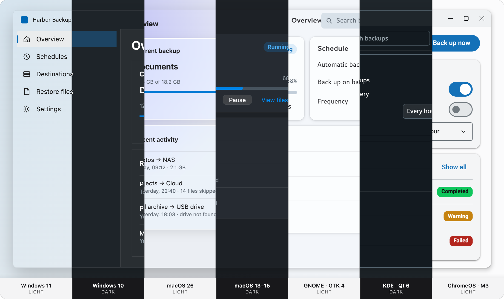

Native on every desktop.
One Angular codebase.
A native-look theme for spartan/ui. Your components stay the same. A skin matches each OS's geometry, materials and states, and a host adapter feeds in the accent, light/dark, contrast and text size the user already chose.
Overview
The same window. Unchanged.
Spartan Native does not fork spartan. Stock components read one shared set of CSS variables. The skin changes the rest, so the app looks at home on every OS without a single per-platform template.

One accent in. A native app out.
The OS gives you an accent
A host adapter reads the system accent, light or dark, contrast, transparency, text size and window focus, and tells the theme every time one changes.
derivePalette() makes every color
The accent is mixed with each platform's own neutrals. Text colors are adjusted until they reach WCAG 4.5:1, and error, success and warning borrow the accent's saturation.
A skin draws the platform
A class on the root (t-win, t-mac, t-gtk…) sets the geometry,
materials and states: Mica, Liquid Glass, Adwaita, Breeze or Material 3.
Start with plain CSS.
Add only what you need.
Four layers, each built on the one below. Only the theme is required. An app can stop at plain CSS in a browser, or go all the way to native menus and file dialogs.

Tokens, derivePalette(), seven platform skins and provideSpartanNative().
Stock spartan/ui follows the OS with no template changes.

Desktop behaviors: Shift/Ctrl/⌘-click selection, arrow keys and type-ahead, Enter and Esc buttons, and dialog buttons in each OS's order.
Explore helm
Window chrome and the patterns each OS is known for: CommandBar, Sheet, Inspector, PreferencesGroup, StatusPage, tree view, menubar and more.
Explore desktop-ui
One NativeHost contract, five runtimes: browser and PWA, Wails, Tauri, Photino.NET, and
Electron next. Swap one line to change runtime.
Settings users already chose, respected everywhere.
Theming makes an app look native. These behaviors make it feel native, and they work the same in every runtime.
Live light / dark
Switch the OS and the app follows instantly, no reload.
System accent
Every color is derived from the accent, with contrast checks.
Text size 100–200 %
Sizes are in rem, so controls grow with the text.
Inactive window
Selections and chrome dim when the window loses focus.
Reduce transparency
Glass, acrylic and vibrancy become solid surfaces.
Contrast themes
forced-colors and Increase contrast are honored.
⌘ or Ctrl
Shortcuts, key bindings and glyphs follow the real OS.
Desktop selection
Shift-click ranges, arrow keys, type-ahead, Enter and Esc.
Change runtime by changing one line.
Every adapter implements the same NativeHost interface and reports what its runtime can do as
native, partial or none. Components check the flags and fall back
gracefully, so the theme never knows where it runs.
- Browser & PWA: implemented, live media queries and Window Controls Overlay
- Wails (Go): implemented, runs the Harbor sample app as a desktop app
- Tauri (Rust) and Photino.NET: implemented, pass the conformance suite
- Electron: planned
import { provideSpartanNative } from '@spartan-native/theme';
import { webHost } from '@spartan-native/host-web';
export const appConfig: ApplicationConfig = {
providers: [provideSpartanNative({ host: webHost() })],
};import { provideSpartanNative } from '@spartan-native/theme';
import { wailsHost } from '@spartan-native/host-wails';
export const appConfig: ApplicationConfig = {
providers: [provideSpartanNative({ host: wailsHost() })],
};import { provideSpartanNative } from '@spartan-native/theme';
import { tauriHost } from '@spartan-native/host-tauri';
export const appConfig: ApplicationConfig = {
providers: [provideSpartanNative({ host: tauriHost() })],
};import { provideSpartanNative } from '@spartan-native/theme';
import { dotnetHost } from '@spartan-native/host-dotnet';
export const appConfig: ApplicationConfig = {
providers: [provideSpartanNative({ host: dotnetHost() })],
};Three steps. Your spartan/ui app follows the OS.
Requires Angular 22+, Tailwind CSS 4 and spartan/ui (@spartan-ng/brain 1.9+).
1 · Install
npm install @spartan-native/theme \
@spartan-native/helm \
@spartan-native/desktop-ui \
@spartan-native/host-web2 · Provide
import { provideSpartanNative } from '@spartan-native/theme';
import { webHost } from '@spartan-native/host-web';
export const appConfig = {
providers: [
provideSpartanNative({ host: webHost() }),
],
};3 · Style
// after Tailwind + the spartan preset
@use '@spartan-native/theme/styles/spartan-native';
@use '@spartan-native/helm/styles/spartan-native-helm';Building with an AI agent? The Claude Code plugin ships the setup for every runtime, ready templates, and the rules for which component to use.
Where it stands at 0.1.
Before 1.0, a minor version may contain breaking changes.
Read the roadmap →
Ship one app. Belong on every desktop.
Stock spartan/ui components, seven native skins, and the user's own settings, live.